The Green
Heartland
A one-way self-drive arc from the Kerala coast through the coffee highlands of Kodagu, down into Mysuru's royal heritage, and up into the Nilgiri clouds — ending at Coimbatore airport. EVM Wheels pickup at Kannur Airport. Drop at Coimbatore.
Coffee estates, elephants, Buddhist monastery
Palace, Chamundi Hills, Brindavan Gardens
Nilgiri peaks, tea estates, toy train
Expect crowds at major sites, especially weekends. Ooty E-Pass required for private vehicles entering Nilgiris district. Dubare Elephant Camp morning slots sell out. Book everything before departure.
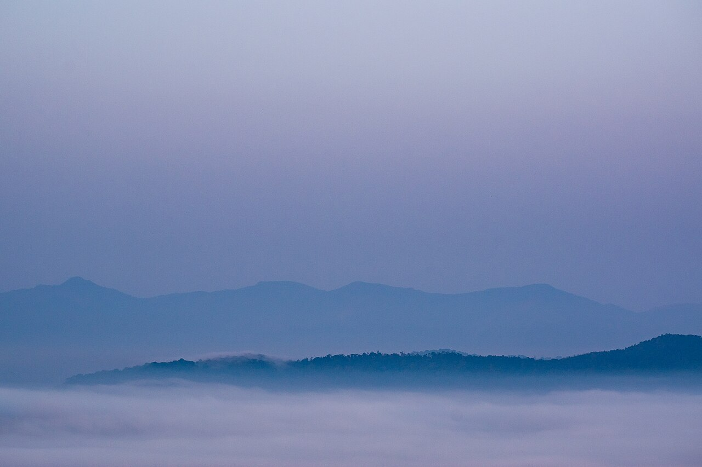
The Kodagu (Coorg) highlands — coffee, pepper and cardamom country at 1000m+
Pre-Trip Checklist
Everything to book before May 20. Tick as you go.
✈ Flights
🚗 Car Rental
EVM Wheels: Pickup at Kannur Airport · Drop at Coimbatore Airport.
Call: +91 790 281 0000 · Website: evmwheels.com
Confirm one-way drop charges in writing before paying. Clarify fuel policy, insurance coverage, and 24/7 breakdown support number.
🏨 Accommodations
🎫 Activities & Permits
💰 Cash & Cards
🌤 Weather Note
Coorg (May 20–22): Pre-monsoon. Light showers, misty mornings — beautiful. Pack a waterproof jacket.
Mysuru (May 23–24): Hot, 34–38°C. Midday rest planned. Outdoor activities in morning and evening.
Ooty (May 25–26): 14–22°C. Peak tourist season. Carry a light fleece — summit temperatures drop sharply.
Driving: Masinagudi hairpins may be slippery if wet. Drive slow on ghat roads.
Mumbai → Kannur → Coorg / Arrival Day
TL;DR
Fly Mumbai–Kannur, pick up EVM car, drive through Wayanad into Coorg. Arrive Madikeri by evening. First sight of rolling coffee country. Sunset at Raja's Seat. Dinner with authentic Kodava cuisine.
Amanvana Spa Resort, Coorg
River-facing cottages on the Kaveri river, lush estate surroundings, spa, outdoor pool. Best mid-luxury property in Coorg for a genuine coffee estate experience.
📍 View on MapsEVM will meet you at/near Kannur Airport. Do the full walk-around inspection — photograph all sides before driving off. Confirm Coimbatore drop-off address. Get breakdown helpline number. Check fuel level.
Leave for Mumbai Airport
Peak Mumbai traffic in May. Build in 30 min buffer. Light breakfast at airport or grab something at home.
Mumbai Airport — Board Flight
IndiGo or Air India Express to Kannur (CNN). Approximately 1.5 hrs. Small turboprop aircraft — not much of a view but short and comfortable. Grab coffee and something to eat here; next proper meal is 1 PM.
Land Kannur — EVM Pickup
📍 MapsClear baggage, meet EVM. Full car inspection with photos (front, back, sides, inside). Sort paperwork (~45 min). Get breakdown number. Confirm Coimbatore drop-off location in writing before leaving.
Leave Kannur → NH66 South
Head south on NH66 toward Thalassery. Coastal Kerala on your right. 20-min drive to the first stop.
Thalassery Fort — En Route Stop
📍 Maps16th century Portuguese fort on the Arabian Sea cliff. ₹5 entry. Walk the ramparts — 25 minutes. The coastline below is the same shoreline the Portuguese, Dutch and British fought over for the Malabar spice trade for 300 years. The lighthouse adjacent is operational. Skip if tired.
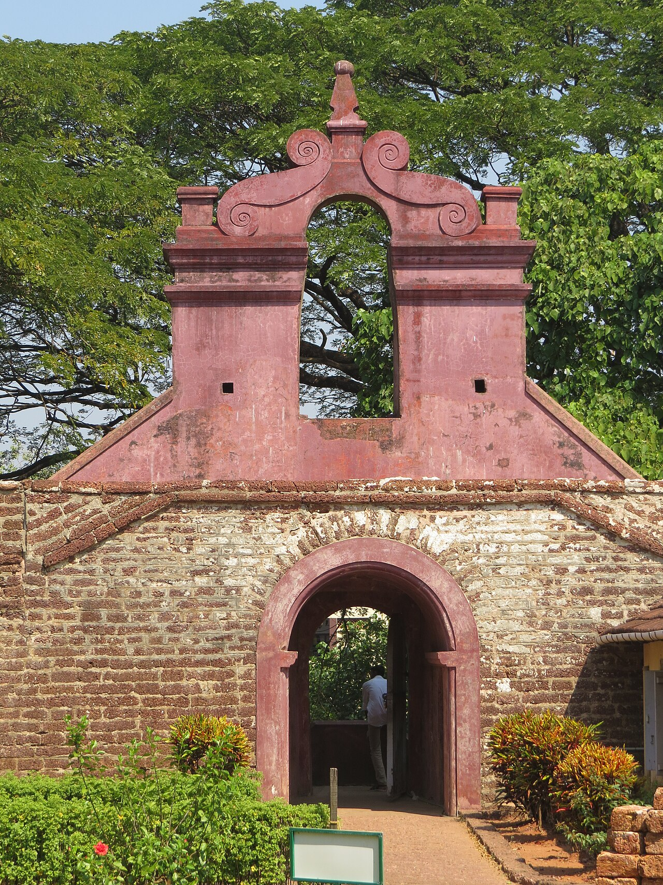
Mananthavady, Wayanad — Kerala Meals
📍 MapsStop at any Kerala "meals" restaurant on the main road in Mananthavady. Red rice, fish curry, avial, pappadam — ₹150–200 per head. This is the last authentic Kerala food before Karnataka cuisine takes over. Don't skip.
Mananthavady → Kutta → Virajpet → Madikeri
NH766 east. Around Kutta, the road begins climbing and the air changes. You'll smell pepper vines before you see them. Coffee and cardamom on both sides as you enter Kodagu district. Keep windows down.
Arrive Madikeri — Check In
📍 ResortAmanvana is near Kushalnagar (~30 min from Madikeri town). Check in, freshen up, coffee from the estate. Allow 1 hour to settle in before heading out.
Raja's Seat — Sunset
📍 Maps₹20 entry. The pavilion where Kodagu kings watched the sun go down over their kingdom. Valley drops away below — three or four hill ranges stacked behind each other like stage scenery. The light turns from gold to pink to violet in 15 minutes. Arrive by 6:15 PM for position. This is your first full Coorg view.
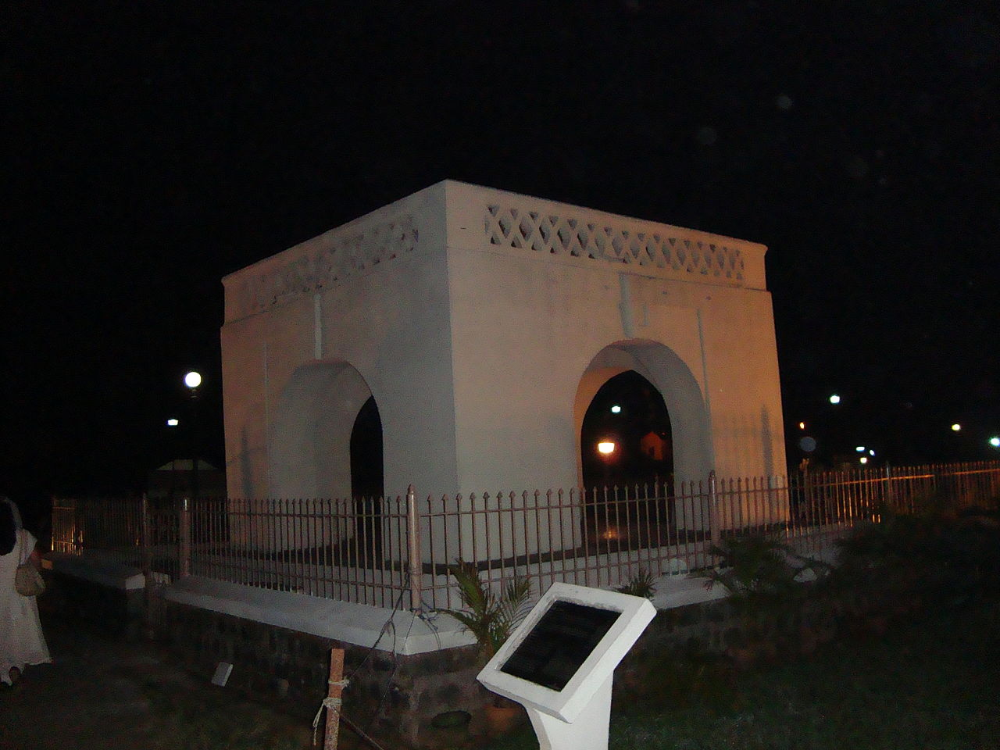
Hotel Capitol, Madikeri — Kodava Cuisine
📍 MapsOrder: Pandi Curry (Coorg pork slow-cooked in kachampuli vinegar — the Kodava signature dish), Kadambuttu (steamed rice balls), Noolputtu (rice noodles). Skip anything on the "Indian Chinese" section. Budget ₹400–600 for two.
Back to Resort — Early Night
Day 2 starts at 7 AM. Abbey Falls is best before 9:30 AM. Set alarm.
Waterfalls · Buddha · Coffee / Coorg Local
TL;DR
Abbey Falls at golden hour, then drive to the magnificent Namdroling Buddhist Monastery at Bylakuppe — the largest Tibetan temple complex outside Tibet. Afternoon coffee estate walk. Temple visit at sunset. Candlelit dinner at Evolve Back Coorg's plantation dining room.
Wake Up — Step Outside First
Coorg mornings at 6:45 AM deserve 10 minutes of doing nothing. Mist fills the valley below the estate, birds you've never heard in Mumbai. Coffee blossoms in April–May smell like jasmine. Don't rush past this.
Homestay / Resort Breakfast
Idli, chutney, filter coffee from estate-grown beans. The coffee here is from the property's own Arabica plants — different from anything you get in Mumbai. Eat fully; next meal is Tibetan food at 1 PM.
Head to Abbey Falls — 9 km from Madikeri
25 min drive. Arrive by 9 AM — before the tour buses.
Abbey (Abbi) Falls
📍 Maps₹10 entry. 5-minute trail through a canopy of coffee and pepper vines — you smell the pepper before you see it. The falls drop 70 feet and in May have strong pre-monsoon flow. A hanging bridge is positioned for the best view angle. The mist from the falls reaches you at 15 metres. 45 minutes here.
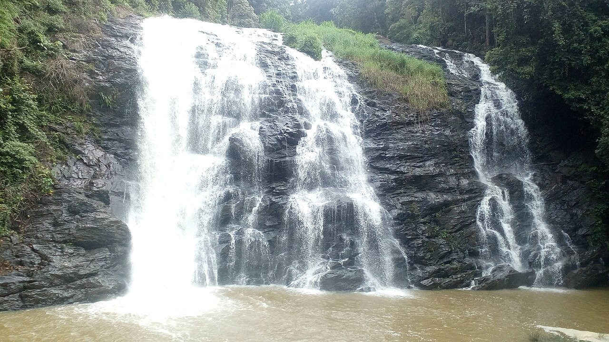
Madikeri → Bylakuppe (1 hour)
Head east via Kushalnagar. You'll cross a bridge over the Kaveri — the river you'll trace all the way to its source tomorrow. Bylakuppe appears suddenly out of Karnataka farmland: red-robed monks on motorcycles, prayer flags, Tibetan script on walls.
Namdroling Monastery — Golden Temple, Bylakuppe
📍 MapsPark outside. Remove footwear at the gate. This is the largest Nyingma Buddhist settlement outside Tibet — 5,000+ Tibetan refugees settled here since the 1960s. Enter the Zangdog Palri Fo-Brang temple first: three golden Buddhas (the central one at 18 feet), 1,000 smaller figures, ceiling murals that took 10 years to complete.
Find a corner and sit quietly for 10 minutes. Monks do puja rounds throughout the day. Walk the mani prayer wheel corridor — spin each wheel clockwise with your right hand. The Tibetan Vajrayana tradition here absorbed significant Hindu tantric elements — the fierce protective deities at the entrance are identical in concept to the Durga forms in Hindu temples. This overlap is worth spending time with. Spend 1.5–2 hours here, not 30 minutes.
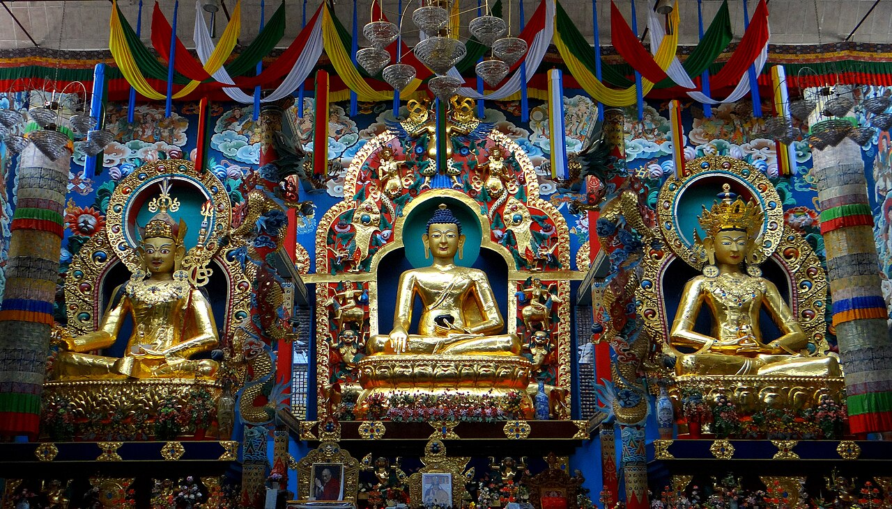
Tibetan Restaurants — Outside Monastery
📍 MapsSeveral Tibetan restaurants line the street just outside. Order: Thupka (noodle broth — Tibet's version of ramen), Steamed momos (not fried), Butter tea if curious (salty, acquired taste). Honest food, under ₹200 a head.
Bylakuppe → Resort (45 km, 1 hr)
Stop at Kushalnagar for sugarcane juice if it's hot. The drive back through the coffee belt in the afternoon light is different from the morning.
Coffee Estate Walk — Resort Arranged
Ask the resort to arrange a guided estate walk (usually complimentary or ₹200). A worker will walk you through the Arabica rows, show pepper vines climbing the silver oak trees, explain the processing: pulping, fermenting, drying, hulling. Ask what the cost difference is between estate-direct and retail — usually 3–4x. Buy a kg directly if they sell it.
Omkareshwara Temple, Madikeri
📍 MapsFree entry. Easy 30-min visit. From outside it looks like a colonial bungalow. Inside: a 19th-century Shiva temple built by Coorg king Lingarajendra in 1820, with a Gothic tower from the British era and an Islamic dome — three architectural styles on one building. A small tank with turtles and fish in the courtyard. This architectural fusion tells Coorg's complex history in one building.
Evolve Back Coorg (Orange County) — Open Air Plantation Dining
📍 MapsThe finest dining experience in Coorg. Open-air pavilion dining by candlelight, set against the coffee plantation. Coorg Heritage Menu — Pandi Curry, Koli Curry (Coorg chicken), Estate Fish, Akki Roti. Seasonal cocktails. Live Carnatic music on select nights. Request a valley-view table when booking. Reservation required: +91 820 225 7900.
Elephants · Kaveri Source · Ancient Fort / Coorg Deep
TL;DR
Morning elephant camp on the Kaveri island (morning slot only — don't be late). Afternoon drive to Bhagamandala river confluence and Talacauvery — the sacred hilltop spring where the Kaveri originates. Evening at Madikeri Fort. Last night in Coorg.
Elephant camp operates 9–11 AM only. Must book in advance at dubareelephantcamp.com or via JLR (Jungle Lodges & Resorts). Late arrival forfeits your slot. Leave resort by 7:00 AM sharp. Dubare is 60 km away.
Wake Up, Quick Breakfast, Leave by 7 AM
Light breakfast only — you'll be near water. Dubare is 60 km, 1.5 hrs. Leave by 7 AM to reach by 8:30 AM. Factor time for parking and river crossing.
Dubare Elephant Camp — Kaveri River
📍 MapsBuy tickets at the Forest Department counter. Cross the Kaveri by wooden boat to the island camp. 20+ elephants of the Karnataka Forest Department stationed here — these are working elephants used in temple festivals and forest operations.
Morning session: mahouts begin the bathing ritual in the river. You can help scrub — the elephants lean into it like dogs. Feeding session with sugarcane balls follows. Some elephant-mahout pairs have been together 20+ years. Watch the body language between them. Full 2 hours here. ₹500–1,000 per person.
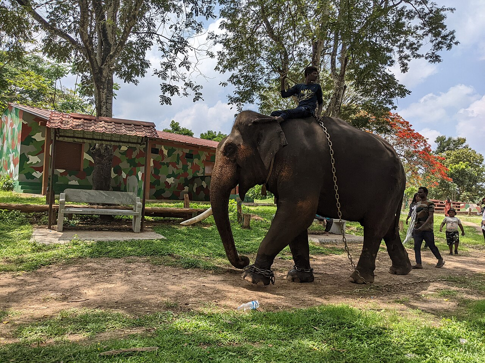
Dubare → Bhagamandala (~1.5 hrs)
Route via Virajpet and Napoklu. Road passes through core coffee country. Good overtaking stretches.
Bhagamandala — Local Karnataka Meals
📍 MapsSmall town, roadside Karnataka meals. Nothing fancy. Sambar, rice, two vegetables, papad — ₹120 per head. Eat quickly before the afternoon visits.
Bhagamandala — Triveni Sangam
📍 MapsWalk to the river confluence — Kaveri, Kannike, and the mythological underground Sujyothi meet here. Sacred bathing ghats, the Bhagandeshwara temple complex on the riverbank. Pilgrims come to immerse ashes. Quiet on a weekday. 30 minutes.
Bhagamandala → Talacauvery (20 min, steep switchbacks)
Slow down on the switchbacks. Keep honking on blind corners — local protocol.
Talacauvery — Source of the Kaveri, 1276m
📍 MapsA small sacred kund (tank) marks the exact spring. The Kaveri flows 800 km from this quiet hilltop to the Bay of Bengal — feeding 80 million people, irrigating the delta rice bowl, powering the KRS Dam you'll see in Mysuru. Climb the 50 steps to the Brahmagiri viewpoint: 360° of the Coorg ranges. On a clear day, you can see the Western Ghats all the way to Kerala. Deeply underrated spot. 45 minutes.
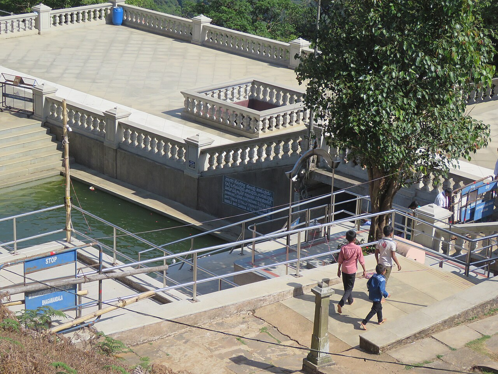
The sacred origin of the Kaveri river at Talacauvery
Talacauvery → Madikeri (40 km, ~1 hr)
Madikeri Fort
📍 MapsFree entry, closes 6 PM. Fort-palace hybrid — built in mud by Coorg kings in the 17th century, rebuilt in stone under Tipu Sultan, modified by the British. Bronze tiger's head cannons at the Elephants Gate (Tipu's trademark). Old prison, chapel, small museum. 45 minutes.
Madikeri Bazaar — Last Coorg Shopping
Pick up: Coorg honey (buy from local shops, not tourist stalls), homemade plum or orange wine, pure pepper (whole black), cardamom, Coorg spices pack. Budget ₹500–1,000.
Hotel Coorg International — Farewell Coorg Dinner
📍 MapsPork ribs Coorg style, Neer Dosa with chicken curry, Kodava Payasam for dessert. Pack bags tonight after dinner — checkout tomorrow at 7:30 AM for Mysuru.
Coorg → Mysuru / Palace & Temple Night
TL;DR
Drive to Mysuru via Hunsur. Check in to the Royal Orchid Metropole (1920s heritage property). Legendary butter dosa lunch at Mylari. Devaraja Market in the afternoon. Mysuru Palace visit at golden hour. Chamundeshwari Temple at night — the illuminated temple from 1000m elevation.
Royal Orchid Metropole, Mysuru
Heritage 1920s colonial property, one of the best-located hotels in Mysuru. Garden rooms, pool. A few minutes' walk from the Palace and Devaraja Market.
📍 View on MapsBuy the ₹200 Special Entry ticket (avoids 45-minute free queue). Available at the ticket counter before the main gate. On Friday evenings, free queue can be 30–45 mins. Don't risk it.
Checkout Amanvana — Leave Coorg
Route: NH275 via Kushalnagar → Hunsur → Mysuru. Good highway, smooth road. Coffee from resort for the road.
Optional: Nagarhole Viewpoint
📍 MapsNear Hunsur, the road skirts Nagarhole National Park. Park at a roadside viewpoint for 15 min. Kabini river is visible — elephants sometimes spotted in early morning near the water. Not a full safari, just a quick look.
Arrive Mysuru — Check In
Check in to Royal Orchid Metropole. Freshen up. The hotel is walking distance from the Palace and market — you won't need the car this afternoon.
Vinayaka Mylari, Nazarbad
📍 MapsA legend since the 1950s. One item on the menu: butter dosa and chutney. The dosa arrives crisp at edges, soft in the middle, floating in butter. Cash only. No choices to make. Closes when food runs out (usually 2 PM on Fridays). Go at 12:15 sharp.
Hotel Rest — Midday Break
Mysuru at 2 PM in May is 36°C. Rest 1.5 hours. The palace visit starts at 4 PM in better light.
Devaraja Market
📍 MapsMysuru's oldest covered market, over 100 years old. Walk section by section: jasmine ropes sold by the metre, marigold mountains, Mysuru silk dupattas, sandalwood items, incense, spices. Buy agarbatti made of sandalwood paste — the Mysuru variety smells completely different from Mumbai brands. 45 minutes.
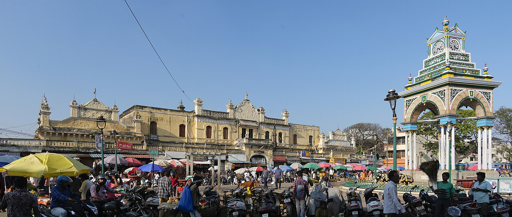
Colors and aromas of the historic Devaraja Market
Mysuru Palace — Indo-Saracenic Masterpiece
📍 Maps₹150 entry. Audio guide ₹100 extra — worth it. Open 10 AM–5:30 PM. You have 1.5 hrs. Walk-through sequence: Doll's Pavilion (ivory figures, Tipu Sultan's sword), Kalyana Mantapa (12 Glasgow stained-glass sunflower domes, cast iron pillars from Kolkata, mosaic floor from Jaipur), Ambavilasa Hall (painted ceilings — 15 years of work), Durbar Hall (golden howdah 750 kg, ivory palanquin). No cameras inside main halls — serious enforcement.

Mysuru Palace — 12 different architectural styles in one facade
Palace Exterior — Golden Hour Photography
The Indo-Saracenic facade in 5–6 PM light is extraordinary. Photograph from the far corner of the garden. On Sunday evenings the 97,000 bulbs light up — tonight is Friday so no illumination, but the golden hour is better for photos anyway.
Palace → Chamundi Hills (13 km, 30 min)
Chamundeshwari Temple — Night Darshan (7:30–9 PM)
📍 MapsBuy ₹200 special entry ticket at counter before the main gate. The illuminated gopuram at night is visible from across Mysuru — up close it's even more dramatic. Chamundeshwari is the kuldevi (guardian deity) of the Mysore Wadiyar dynasty. She slew the buffalo demon Mahishasura on this hill — the city's name (Mahishasura's land → Mahisuru → Mysuru) comes from that myth.
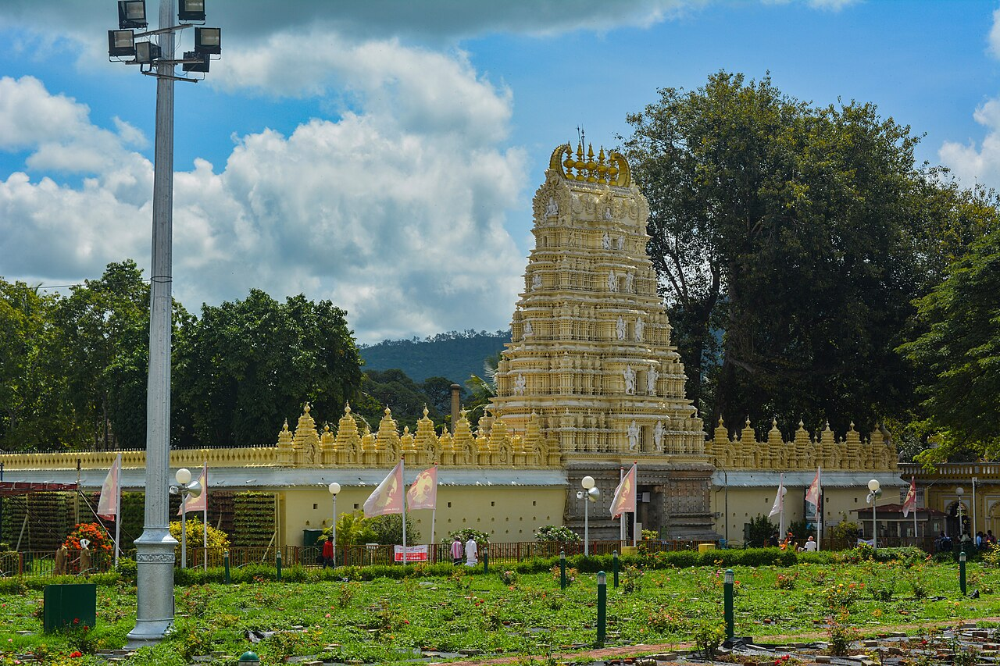
The towering gopuram of Chamundeshwari Temple on the hill
Hotel RRR, JSS Road
📍 MapsAndhra unlimited meals, banana leaf, loud, fast, fantastic. ₹180 per head. Or Depth N Green for something quieter if the day has been long.
Mysuru Full Day / Hills · Zoo · Museum · Musical Gardens
TL;DR
Chamundi Hills dawn darshan with panoramic city views. Nandi Bull on the descent. Mysuru Zoo — one of India's top three. Railway Museum with heritage steam locomotives. Evening drive to KRS Dam and Brindavan Gardens for the spectacular 45-minute musical fountain show under lights.
Hotel → Chamundi Hills (13 km, 25 min)
Leave early — 7 AM at the temple. Breakfast after darshan.
Chamundeshwari Temple — Morning Darshan
📍 MapsOpens 7:30 AM. ₹200 special entry. Morning puja is different — priest doing the first ritual of the day, bells echoing in the empty hall. After darshan, walk to the hilltop viewpoint: Mysuru city is spread below, the palace dome at the centre, KRS reservoir glinting to the northwest. On clear mornings, 30+ km visible.
Nandi Bull Statue — On Descent
📍 MapsHalfway down the hill. Drive to it. 5-metre monolithic granite Nandi bull carved from a single rock, approximately 400 years old. One of South India's largest. 15-min stop.
Hotel or Mylari Again
If you couldn't resist, Mylari opens around 7 AM. Otherwise hotel breakfast.
Gowri's Sand Museum
📍 Maps8:30–6:30 PM, ₹60. Hidden gem. 13,500 sq ft of sand sculptures — the Mysuru Dasara procession in miniature sand is the standout piece: the palace, elephants, royals, soldiers all in painstaking detail. Built by artist M.N. Gowri. Genuinely impressive. 45 min.
Mysuru Zoo — 157 Acres
📍 Maps8:30–5:30 PM, closed Tuesdays (Sat is fine). ₹120 entry + ₹240 battery vehicle (essential in May heat). Established 1892 — one of India's three best-managed zoos. Must-see enclosures: white tiger, African giraffe habitat, Komodo dragon, elephant yard. The oldest trees here are 130 years old. 2 hours.
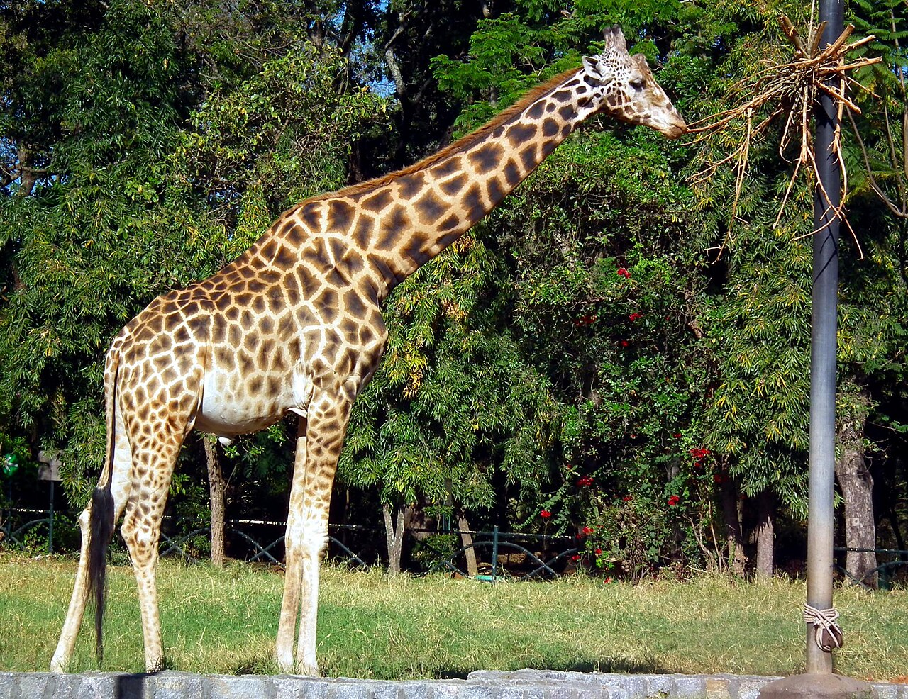
Wildlife at the historic Sri Chamarajendra Zoological Gardens
Hotel Dasaprakash, Gandhi Square
📍 MapsClassic Mysuru thali. Fixed menu, ₹180 per head. Sambar, rasam, four vegetables, rice, payasam. South Indian at its most archetypal. Clean, efficient, consistently excellent.
Hotel Afternoon Rest — 2:30–4 PM
Mysuru at 3 PM in May is genuinely punishing. Strategic rest. Rehydrate. The Railway Museum in late afternoon is perfect.
Mysuru Railway Museum
📍 Maps10–6 PM, closed Tuesdays. ₹30 entry. Outdoor campus with 30+ heritage locomotives — 100-year-old steam engines, the Mysore Maharaja's royal saloon carriage (velvet interior, gold fittings), narrow-gauge mountain wagons. The Toy Train inside the campus is genuinely fun. 1.5 hours.
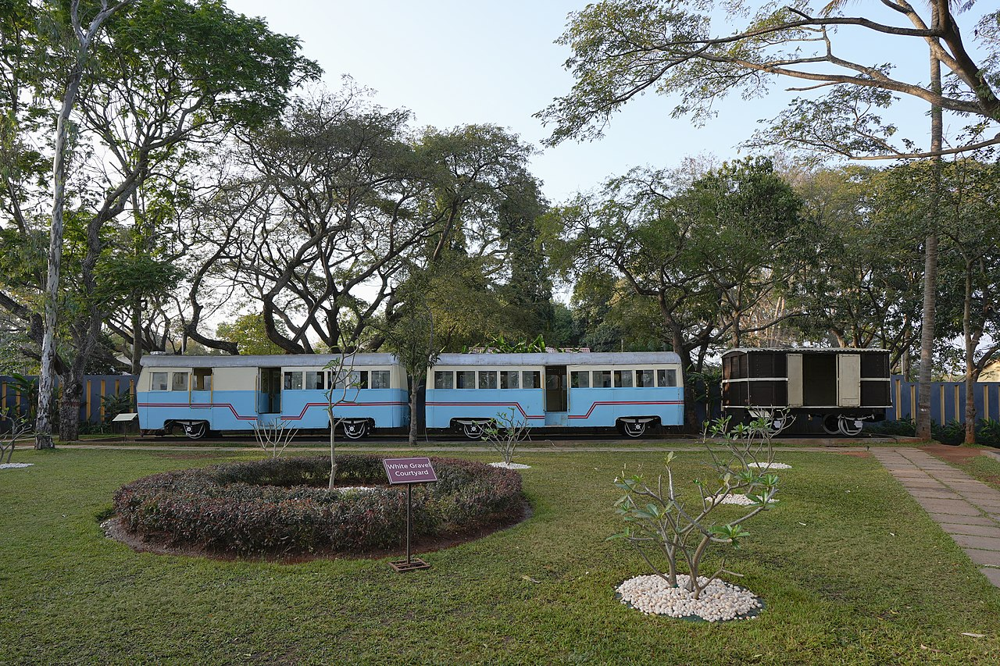
Vintage locomotives at the Mysuru Railway Museum
Mysuru → Brindavan Gardens / KRS Dam
Brindavan Gardens — Pre-Show Walk
📍 Maps₹100 entry + ₹50 buggy. Walk the North Garden — Italian-style terraced geometric flower beds. The KRS Dam wall is walkable (2.6 km long) — it irrigates the entire Cauvery delta region. The reservoir here is the KRS — water you first saw as a spring at Talacauvery in Coorg two days ago. Get position near the central fountain by 6:45 PM.
Musical Fountain Show (7:00–8:00 PM)
📍 MapsWater jets choreographed to music, lit in rotating colour sequences, set against the dam backdrop. 45-minute show. The kind of experience that works for everyone regardless of taste. Don't stand at the back — the central position is far better.
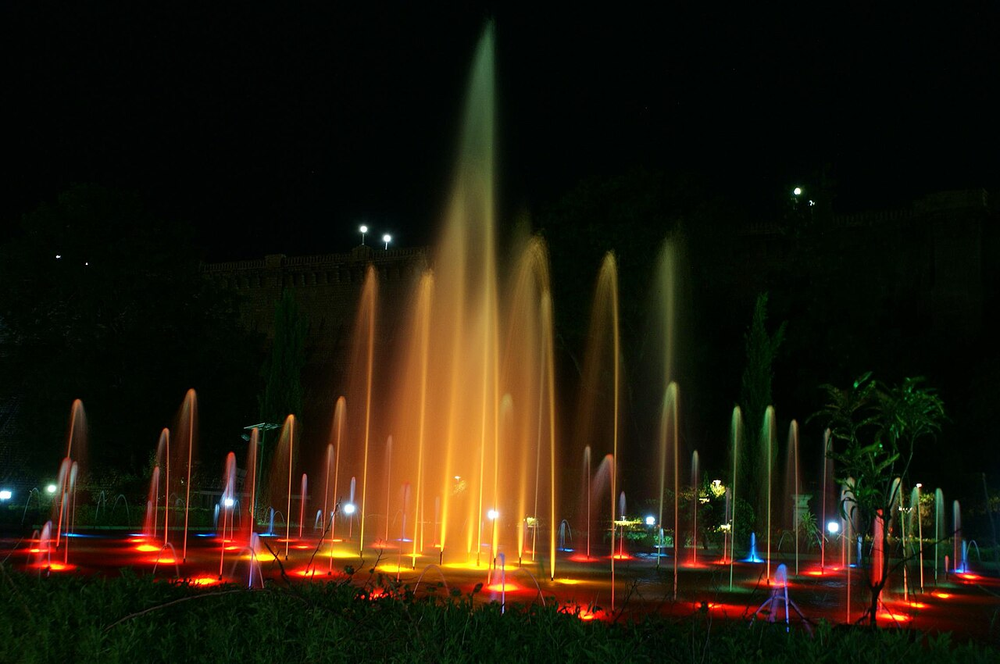
Par Excellence, Vinoba Road, Mysuru
📍 MapsNorth Karnataka cuisine. Jowar roti, ennegayi (stuffed brinjal curry), lamb chops. Quieter than other Mysuru joints. Pack bags after dinner — leaving Mysuru at 6:30 AM tomorrow morning.
Mysuru → Ooty / Wildlife, Hairpins & Cloud Country
TL;DR
The most dramatic drive of the trip. Through Mudumalai Tiger Reserve (wild elephant corridor), Theppakadu working elephant camp, then the legendary 36-hairpin ascent into the Nilgiris. Temperature drops 12°C through the cloud layer at bend 15. Arrive Ooty by 2 PM. E-Pass checkpoint at Masinagudi — have QR code ready.
Apply at epass.tnega.org. Choose "Nilgiris". Select Masinagudi entry checkpoint. FREE. Carry ₹300 cash for Green Tax at the physical checkpoint. Show QR code on phone — no printout needed.
Sunday traffic at Mudumalai and the hairpin section doubles travel time by 9 AM. Missing the 6:30 AM window means hitting the worst of it. Set two alarms.
Savoy Hotel, Ooty (Taj Property)
Operating since 1829. Colonial bungalows spread across garden grounds. The oldest continuously operating hotel in Ooty. Garden cottage rooms, fireplace, butler service.
📍 View on MapsLeave Mysuru — Route: SH88 South toward Nanjangud
Grab something small from hotel. No time for a sit-down breakfast — you'll have a proper one stop en route.
Nanjangud — Srikanteshwara Temple (Brief Stop)
📍 MapsOne of Karnataka's five sacred Shiva shrines (pancha linga kshetras). On the Kabini river bank — the same Kabini whose source is in Coorg, the same forest you drove past two days ago. Morning darshan if the temple is open (opens 7 AM). 15-min stop maximum.
Gundlupet — Fuel & Eat
📍 MapsFill the fuel tank completely. This is the last petrol station before Mudumalai. Small town restaurants for idli or vada + coffee. 30 min stop. Don't skip the refuel.
Enter Mudumalai Tiger Reserve
📍 MapsSpeed limit: 25 kmph. Camera-enforced. Windows down. This is the Nilgiris Biosphere Reserve — 3,500 sq km of connected forest, one of Asia's most important wildlife corridors. Drive slowly and scan treelines. Common sightings: spotted deer in herds, Indian gaur (massive bison), langur monkeys, peacocks displaying in May (mating season). If you see an elephant on the road: stop, engine off, wait silently. Never honk.
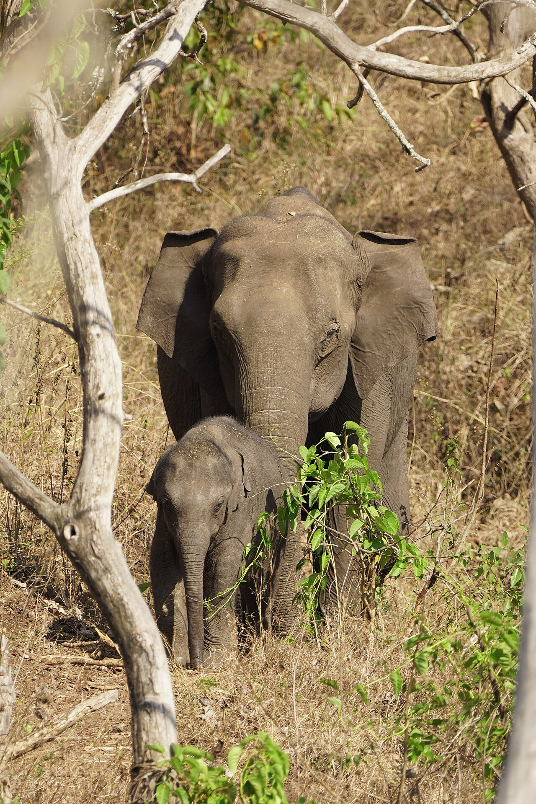
Theppakadu Elephant Camp — Forest Department
📍 MapsTamil Nadu Forest Department's operational elephant camp — different from tourist-facing Dubare. These 20+ elephants do actual work: fire protection, timber operations, rescue. Watch morning feeding from the platform. Coracle ride on the Moyar river ₹50. 45 minutes.
Masinagudi — Highway Dhaba
📍 MapsBasic veg meals, sambar, rice, rasam. Nothing fancy. Eat quickly — the hairpin drive starts in 30 minutes. Don't eat too heavily before the bends.
Masinagudi–Ooty Hairpin Ascent — 18 km, 36 Bends
📍 MapsThe most dramatic road section of the entire trip. The road climbs 1,200 metres in 18 km. Sequence: Bends 1–7: dense deciduous forest. Bends 8–14: forest gives way to shola grasslands, first tea estates appear. Bend 15–20: you enter the cloud layer — temperature drops 8–10°C in under 5 minutes, visibility can drop to 20m, valley below vanishes. Bends 20–36: tea estates and Ooty entry. No overtaking on hairpins. Some bends are single-lane. Go slow. Honk on blind corners.
Show QR code + driving licence. Takes 2 min if you have it. ₹300 Green Tax cash. Moving on.
Arrive Ooty — Check In Savoy Hotel
Drop bags. The Savoy garden in the afternoon is quiet and cold. Have hot tea. Buy Ooty chocolate from a shop near the hotel.
Doddabetta Peak — 2,637m
📍 Maps9 km from town, ₹30 entry. Highest point in the Nilgiris — highest in Tamil Nadu. Tea estate roads all the way to the top. Telescope House at summit. By 3 PM it's usually inside cloud — the summit disappears into white mist at 15m visibility. That is itself the experience. Temperature at top: 13–15°C. Wind constant. 1 hour.
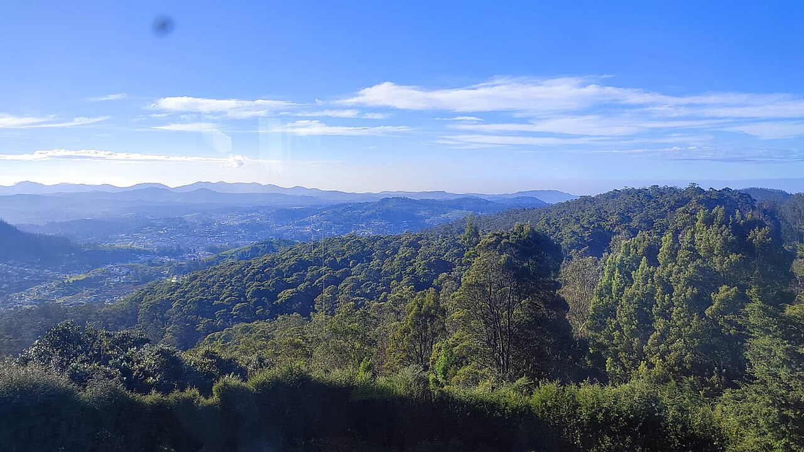
Panorama from the summit of Doddabetta Peak
Charring Cross — Ooty Bazaar
📍 MapsBuy: King Star Chocolates (best homemade chocolate in Ooty, Commercial Road), Nilgiri single-estate tea (buy from an estate shop, not tourist packs), eucalyptus oil, plum wine. Budget ₹1,500. Negotiate 20–30% off on everything.
Sidewalk Café, Ooty
📍 MapsNear Charing Cross. Best restaurant in Ooty — Western + South Indian fusion, warm interiors. Or Hotel Tamil Nadu Restaurant for local Nilgiri mutton curry, rice and bone broth.
Check IRCTC — Toy Train
Open IRCTC app. Check Ooty–Coonoor train, May 26. Any cancellations? If available, buy. If not, proceed to Tatkal plan below.
🚂 Toy Train — Tatkal Strategy
(Conditional Plan for May 25 action)Tonight (May 25), set an alarm for 7:55 AM tomorrow morning.
Tatkal booking for the Nilgiri Mountain Railway opens exactly 1 day in advance at 8:00 AM sharp on IRCTC. For May 26 journey, Tatkal opens May 25 at 8 AM — but you'll be driving through Mudumalai. So tonight, from the hotel, check if regular tickets are available. If not available tonight, the Tatkal window for May 26 is 8:00 AM on May 25 — meaning you've already missed it if reading this on May 25 evening.
Day-of station quota option: Go to Ooty Railway Station in person on the morning of Day 7 (May 26) between 6:30–7:30 AM. Ask the booking counter specifically for "station quota" for the 12:15 PM departure. These seats are separate from IRCTC and sometimes available on the day.
Car stays parked at Ooty Railway Station. You take the train to Coonoor. After Coonoor sightseeing, take a cab or bus back to Ooty (~45 min, ₹400–600 cab). Pick up the car at Ooty Station. Day 8 remains unchanged — drive to CJB.
Ooty · Coonoor · Tea · Trains / Last Full Day
TL;DR
Early morning at the Botanical Garden (before the crowds), then drive or train to Coonoor for the tea factory tour, Sim's Park, and Lamb's Rock viewpoint. Back to Ooty for the sunset. Last dinner in the Nilgiris. Pack bags tonight.
Ooty Railway Station — Station Quota Counter
If you haven't given up on the toy train, walk to the station (10 min from most hotels). Ask counter for station quota on 12:15 PM or 3:00 PM Ooty–Coonoor train. If yes — buy and follow the train plan below. If no — proceed as below.
Government Botanical Garden — Opens 7 AM Sharp
📍 Maps₹100 entry. Go before 9 AM — before tour buses. 22 hectares on the Doddabetta slopes. Morning mist is still on the grass. Key spots: the 20-million-year fossilized tree trunk (just sitting on a lawn, unassumingly), Italian terraced gardens, the bonsai collection, ancient tree ferns found nowhere else in India. 1.5 hours.
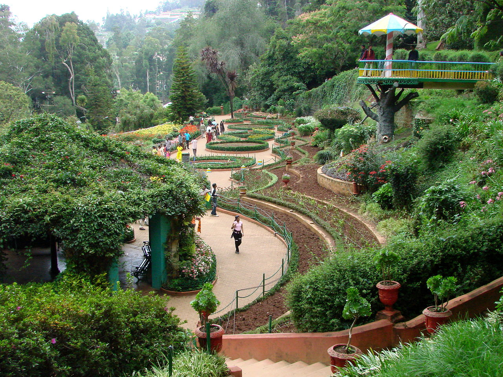
Small Café Near Garden Entrance
Poha or upma, local chai. Simple. ₹60–80 per head.
Ooty → Coonoor (35–40 min)
This route through the tea estates is beautiful — some argue it rivals the train view. Right side of road has better valley drops. Take your time.
Sim's Park, Coonoor
📍 MapsOpens 9 AM. ₹15 entry. 12 acres terraced on a hill, 1,000+ plant species, Japanese rock garden section. Quieter than Ooty's garden — fewer tour groups, more intimate. 45 minutes.
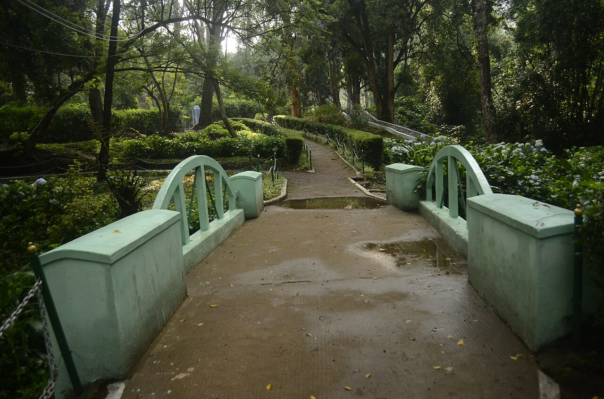
The terraced gardens of Sim's Park, Coonoor
Lamb's Rock — Cliff Viewpoint
📍 Maps4 km from town, ₹30 vehicle entry. Edge of a cliff 2,000m above the Coimbatore plains. On a clear morning you see the plains extending to the horizon — the same plains you'll drive through tomorrow to reach the airport. Western Ghats scarp face in full geological drama. 30 minutes.
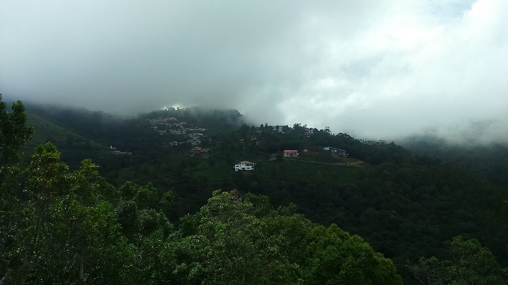
The dramatic drop at Lamb's Rock, Coonoor
Highfield Tea Factory — Working Factory
📍 MapsFree/₹50 entry. 4 stages of tea production visible: Withering (fresh leaves on mesh racks, moisture removed overnight), Rolling (leaves twisted to break cell walls, release enzymes), Fermentation/Oxidation (leaves turn copper — flavour develops here), Drying (fired at 95°C to stop fermentation). The smell inside during drying is extraordinary — concentrated Nilgiri tea aroma fills the room. Buy from factory — 40% cheaper than market price. 1 hour.
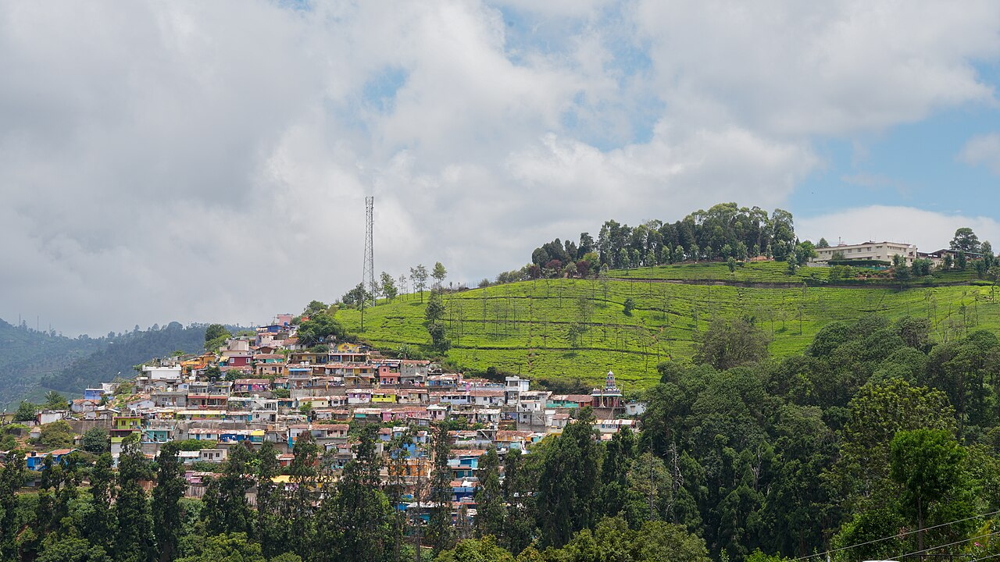
Tea production at the Highfield Tea Estate
Johnson's Café, Coonoor
📍 MapsColonial bungalow, garden seating, the best meal setting of the entire trip. Open air, cool breeze, stone walls. Order: Nilgiri lamb chops, freshly baked bread, garden salad. This is the meal you remember from the trip.
Lady Canning's Seat — Valley Viewpoint
📍 Maps3 km from Coonoor town. Colonial-era named viewpoint, panoramic valley view toward Mettupalayam. 30 minutes.
Coonoor → Ooty (19 km, 40 min)
Back through the tea estates. Pick up the car from wherever it's parked.
Ooty Viewpoint — Last Sunset in Nilgiris
📍 Maps360° panoramic view of the Ooty valley and surrounding ranges. Clouds settle into the valleys at 5–6 PM in May — the light on the tea estates turns golden. Final photos of the trip's mountain chapter.
Savoy Hotel Dining Room
📍 MapsDine at the hotel tonight. Order: Nilgiri mutton stew — a colonial-era recipe, slow-cooked with Nilgiri herbs and coconut milk. Completely different from any Mumbai version. Also: fresh-baked bread, Nilgiri filter coffee. The dining room with its fireplace and 1829 wooden beams is the right setting for the last Ooty dinner.
Pack Bags — Checkout Tomorrow 8 AM
Fuel car tonight if possible. Check flight time. Set alarm. Final IRCTC check is not needed — the train opportunity is past.
🚂 If You Got the Toy Train Ticket
Alternate itinerary — Ooty → Coonoor by trainIf you secured a ticket for the 10:00 AM or 12:15 PM Ooty → Coonoor train:
7:00 AM Botanical Garden (same). 9:00 AM Breakfast. Then drive to Ooty Railway Station by 9:30 AM. Park the car at the station car park. Board the train. 1.5-hr journey through tea estates, 250 bridges, 16 tunnels — right-side seat. Arrive Coonoor. Do Sim's Park, Lamb's Rock, Highfield Factory, lunch at Johnson's Café. At 4:00–5:00 PM, take a cab from Coonoor to Ooty Station (₹400–600, 45 min). Collect the car. Evening plan same as above.
Ooty Railway Station has a proper parking area. Car stays at Ooty station while you're on the train. Cab back afterward. Day 8 drive to CJB is unchanged. The car is always with you — no car left at Mettupalayam or Coonoor.
Ooty → Coimbatore → Mumbai / Homeward
TL;DR
Easy morning checkout from Savoy. Drive 85 km down from the Nilgiris to Coimbatore airport. Drop EVM car at EVM Coimbatore outlet. Afternoon/evening flight home to Mumbai. 8 days, 600 km, 3 of India's greatest landscapes behind you.
Verify the exact Coimbatore drop-off address with EVM before May 20. They may have a specific outlet near the airport or in the city. Note their drop-off hours — arrive at least 30 min before they close. Get confirmation of all charges at drop-off.
Final Morning in Ooty — Tea Estates
Take 20 min before checkout. Walk the Savoy hotel garden. The Nilgiri morning: cold, misty, tea-scented. This is the last of the hills.
Leave Ooty — Route via Mettupalayam
The descent from Ooty to Mettupalayam (55 km) is through the same tea estates and hairpin roads as the ascent but on a different highway. Cooler, less traffic than the Masinagudi route.
Annapoorna Sree Krishna, Gandhipuram, Coimbatore
📍 MapsOne of Coimbatore's iconic breakfast restaurants. Idli, dosa, vada, filter coffee — the real deal. ~₹120 per head. 30-min detour into the city if time permits. Or eat at the airport if tight on time.
EVM Wheels Drop — Coimbatore
↗ EVM SiteReturn the car. EVM agent does walk-around inspection (you have your pre-trip photos if needed). Settle any dues. Get fuel cost reimbursement or pay balance as per contract. Get a drop confirmation receipt.
Coimbatore Airport — Check In
CJB is a small, easy airport. Bag drop and security takes 20–30 minutes. Buy last Nilgiri tea packs at the airport shop. Book 3 PM+ flight for a completely relaxed morning.
Coimbatore (CJB) → Mumbai — 1.5 hrs
IndiGo or Air India Express. Land Mumbai ~4:30–5:30 PM. Home by evening. 600 km of Western Ghats behind you.
Kerala coast → Coorg coffee highlands → Mysuru's royal corridors → Nilgiri cloud forest. One car, one arc, no backtracking. The same Kaveri river you first saw at its sacred source on Brahmagiri Hill in Coorg — you watched its water fill the KRS reservoir at Brindavan Gardens in Mysuru. Eight days, three districts, three Indian states.